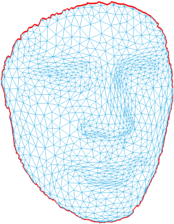

tutorial 1: algebra and topology
This package provides various algebraic and topologic functions. Our goal is to provide "engough" fundamental functions such that users can develop their own applications based on (only) this package. Performance is always in our mind when developing this package. To achieve best performance, vectorized operation is employed whenever possible.
adjacency matrix is widely used. Nonzero element in am indicates a link (edge) of the mesh. Likewise, nonzero element in amd indicates a link (halfedge) of the mesh. Additionally, am(i,j) == 2 means that edge(i,j) is an interior edge, while am(i,j) == 1 means edge(i,j) is an boundary edge, since boundary edge appears only used by one face and interior edge shares by two faces. Since halfedge is unique, i.e., every halfedge belongs to a single face, we store this connection between halfedge and face in amd. That is, amd(i,j) = k means that halfedge(i,j) belongs to face k, or vice verse, face k has halfedge(i,j), or equivalently, face k has two vertex i and j and they are in ccw order.
[face,vertex] = read_off('face.off');
[am,amd] = compute_adjacency_matrix(face);
Now we show how we can make use of adjacency matrix.
% find edges of original mesh [I,J,V] = find(am); % all nonzero elements in am ind = I<J; % to avoid duplicity edge = [I(ind),J(ind)];% done! % find boundary edges ind = I<J & V == 1; % almost same with reslut of freeBoundary, except that bd2 is not in % consective order and some edge's direction may be swapped bd2 = [I(ind),J(ind)]; % plot boundary edges in surface fig = figure('Position',[530 148 717 560]); plot_mesh(face,vertex) axis off view(-90,-84) hold on e1 = bd2(:,1); e2 = bd2(:,2); % start and end of edges plot3([vertex(e1,1),vertex(e2,1)]',[vertex(e1,2),vertex(e2,2)]',[vertex(e1,3),vertex(e2,3)]','r-','LineWidth',2) export_fig html/tutorial/face -png -transparent close(fig)

To find boundary edges in consective order and right direction, we'd better use amd, since it stores information of halfedge. Please read function compute_bd for details.
Computation on mesh is uausllay decomposed to faces or vertices, for example, calculate face area or vertex normal, discretize Laplace operator or gradeint operator. Such computation usually needs neighbouring faces/vertices.
There are two ways to do this. One natural way is first find neighbours then do the computation. Now we compute one-ring area at each vertex, i.e., area of each vertex is the summation of area of its neighbour faces.
% find compute one-ring faces of vertex [face,vertex] = read_off('bunny.off'); fa = face_area(face,vertex); nv = size(vertex,1);
% insteaf of using for loop to sum, we can use arrayfun, which is more efficient
vfr = compute_vertex_face_ring(face);
va = arrayfun(@(i) sum(fa(vfr{i})),1:nv);
We can also do it in a MUCH MORE efficent way. Since every halfedge is attached with a face, and we can easily access halfedges which start from a vertex. Then the one-ring vertex area can be calculated in this way: for every halfedge, associate it with area of the face that the halfedge is attached to, then sum the area w.r.t. halfedge, which can be done by accumarray. Following is the code:
fa = face_area(face,vertex);
[he,heif] = compute_halfedge(face); % heif means halfedge_in_face, i.e., which face the he belongs to
va = accumarray(he(:,1),fa(heif));
Above two pieces of code do the same thing, however the second one is much faster. We can use tic/toc command to record time. On my computer, first method uses 3.09s, while second method uses 0.044s, which shows significant difference. It's not because we didn't optimize the code in first method (in fact there is not much space to optimize), the reason is that second method can be totally vectorized. Most time of first method is spent on compute_vertex_face_ring (which replys on compute_vertex_ring), it uses loop to find neighbours of each vertex.